#c:ladders
物品标签 · 15 个已收录成员
标签成员 (15)
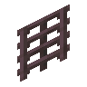
花梨木梯子atmospheric:rosewood_ladder
 酸枝木梯子
酸枝木梯子atmospheric:morado_ladder
 丝兰木梯子
丝兰木梯子atmospheric:yucca_ladder
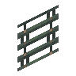
梾木梯子atmospheric:kousa_ladder白杨木梯子
atmospheric:aspen_ladder
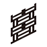
阴郁木梯子atmospheric:grimwood_ladder
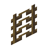
月桂木梯子atmospheric:laurel_ladder
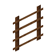
枫木楼梯autumnity:maple_ladder
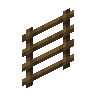
梯子minecraft:ladder
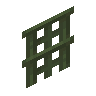
柳木梯子environmental:willow_ladder松木梯子
environmental:pine_ladder
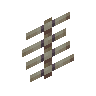
紫藤木梯子environmental:wisteria_ladder
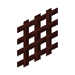
李木梯子environmental:plum_ladder
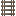
浮木梯子upgrade_aquatic:driftwood_ladder
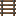
桑木梯子upgrade_aquatic:river_ladder
使用该标签的配方
无